New Zealand is one of the most sought-after destinations in the world. With its snow-capped mountains, ancient glaciers, rolling hills, and copious amounts of wine, it’s a destination unlike all others.
It is also the home of adventure. Where would the world of adventure tourism be without the bungy jump? New Zealander AJ Hackett mastered the art and let the world have a go at the Kawarau Bridge Jump, the first commercial bungy jump operation in the world. Oh, and let’s not forget the jet boat, ski plane and Zorb.
New Zealand is the home of the real Middle‑earth™ and what a travesty it would be if the rest of the world couldn’t find it. Find your way to New Zealand and you will discover real landscapes, hobbit holes and special effects studios famous for bringing JRR Tolkien’s creations to life.
New Zealand has a very unique culture. Experience the haka, a ceremonial Māori dance made world famous by the All Blacks rugby team as their pre-game ritual. Beyond the public sporting display, New Zealand celebrates its Māori culture in daily life and there are numerous places to experience it.
How long does it take to travel New Zealand?
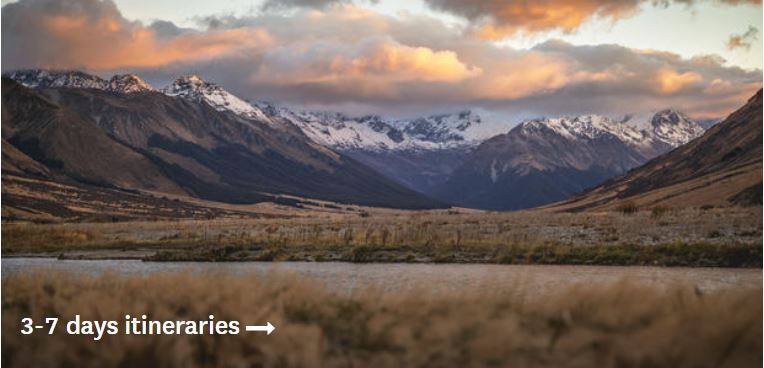
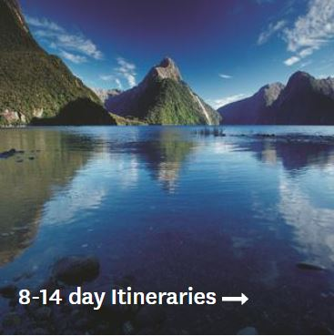
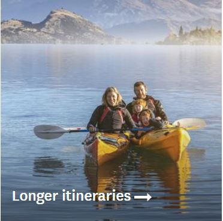
New Zealand is a relatively compact country, so you can see most of the country's highlights in two weeks. To explore more of the regions and get off the beaten track, you could easily spend three weeks or more exploring.
Whether you are going for just a weekend, or for a whole month, you can find an itinerary to suit you.
New Zealand has some of the greatest scenic drives in the world. Picture yourself cruising down the West Coast of the South Island, stopping to look at the Pancake Rocks and Franz Josef Glacier. Or, driving from Christchurch to Queenstown via scenic wonders such as Lake Tekapo and Lake Pukaki. Or making your way to the tip of the North Island on the Twin Coast Discovery highway.
Accomodation
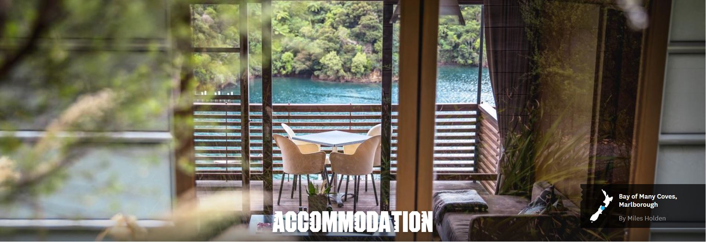
New Zealand accommodation options are diverse, with something for every level of comfort and budget.
From luxury lodges to back-to-nature camping, and glamping accommodation in New Zealand is varied and plentiful.
Accommodation providers with the Qualmark symbol have undergone rigorous assessment to earn their stars - something to bear in mind when researching places to stay in New Zealand.
Find a special place to stay
New Zealand's luxury accommodation is often found in the most stunning locations. Make your journey extra special with a unique accommodation experience.
You’ll find luxury and boutique and lodge accommodation conveniently close to New Zealand's main centres, but often set in tranquil oases that make the most of New Zealand's landscapes and native forests.
Find accommodation to suit your budget
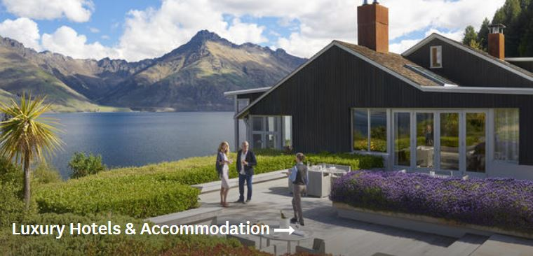
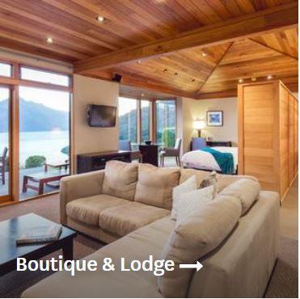
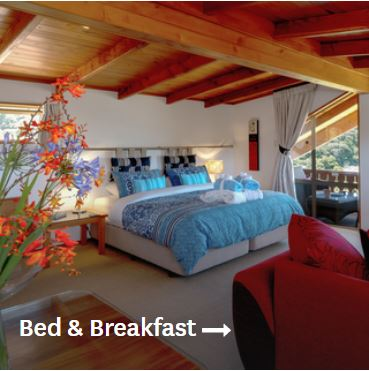
Whether you're travelling solo and fancy the warm welcome of a hostel, or have the whole family in tow and covet a holiday park with a playground, you can find accommodation to suit your budget.
Holiday parks and campgrounds offer fabulously scenic locations for a great price. Meanwhile, hotels and motels are typically centrally-located and ideal mid-range options.
Live like a local
For a real Kiwi experience, stay in a holiday house ('bach' in local slang). Baches are typically small homes tucked away in quiet coastal towns or other scenic spots, with a back-to-basics approach and retro feel.
For deeper insight into local culture as well as the cosiness of a real home, you can enjoy the hospitality of farmstay or homestay hosts.
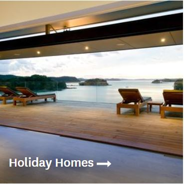
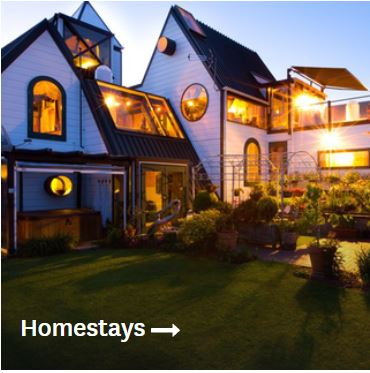
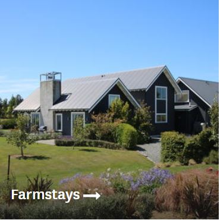
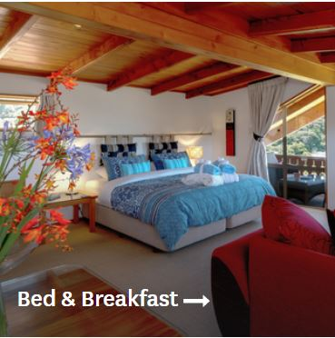
Pricing
Fenesse Tour is a vibrant travel brand that is dedicated to YOU - the customer! With 30 stores across New Zealand we are here to help you embrace life through travel. As our stores are 100% New Zealand owned and operated, we understand what kiwi’s want when they travel and deliver on this every time. Our aim is to continue to be the market leader in the travel industry and to take it up another level for you.
Our background as New Zealand’s oldest retail travel brand, means we have the stability, knowledge, and professionalism that you can trust. Our mission to ‘enrich our customers’ travel experiences - to inspire our customers to know that better is possible’ is practiced by all our staff nationwide. We pride ourselves not on being the biggest player, but on being the most trusted and recommended travel brand in New Zealand. Over 90% of our business is repeat business and referrals - because we always put the focus on you!
Fenesse Tour is a part of the First Travel Group, New Zealand’s leading independent travel alliance. By having a small, localised business approach and then combining that with the backing of the First Travel Group, we can deliver an extensive range of services. The power of F.T.G. means we are able to access exclusive rates with many connections across the globe that benefits you - the client.
Below are the tour packages you can choose, starts from Rp 10.000.000.
Wonderful New Zealand Packages
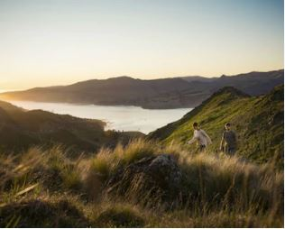
This 6-night in New Zealand’s South Island will be the best vacation ever. Near the scenic city of Christchurch, pass through the changing green hues of Canterbury Plains. Do take snaps of the well-preserved Victorian and Edwardian architectural wonders in Dunedin. The majestic hinterland, Milford Sound within the Fiordland National Park, welcomes you to its sky-high cliffs and dense forests during a serene cruise. On the banks of Lake Tekapo, the Church of the Good Shepherd is a must-visit.
Rp 10.000.000
6 Nights 7 Days
Price per Person (Accommodation such as hotels, homestays, etc are not included).
Stunning New Zealand Packages
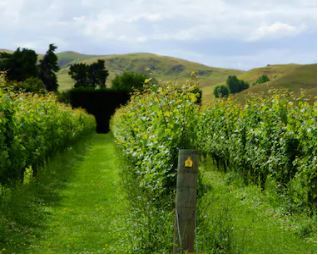
Nothing beats New Zealand’s awe-inspiring landscapes, and this 9-night holiday will be your best opportunity to explore them. Deep in the glowworm-lit caverns of Waitomo Glowworm Caves, enjoy a boat ride. Known for the geothermal valley, Rotorua welcomes you to enjoy the traditional Māori culture. Taste the best wines from the beautiful vineyards of Napier. Have a relaxing time in Wellington. Embark on the TranzAlpine Express in South Island and enjoy sweeping views of the alpine scenery.
Rp 18.000.000
9 Nights 10 Days
Price per Person (Accommodation such as hotels, homestays, etc are not included).
Discover New Zealand Packages
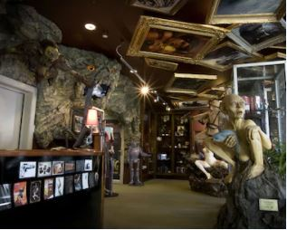
This 13-night family holiday in New Zealand will be the best experience. Near Auckland, a boat ride at the famed Waitomo Glowworm Caves is a must. Don’t miss the prized gems of Rotorua – geothermal valley with active geysers and the native wildlife of Rainbow Springs Nature Park. A scenic ferry ride to the coastal town of Kaikoura in South Island awaits. Enjoy the cruise amidst the pristine natural settings of Milford Sound. Te Anau, Dunedin, and Christchurch will also offer relaxing stays.
Rp 24.000.000
13 Nights 14 Days
Price per Person (Accommodation such as hotels, homestays, etc are not included).